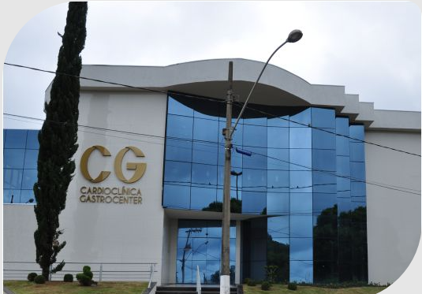
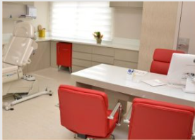
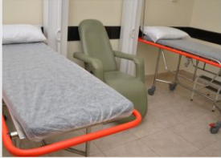
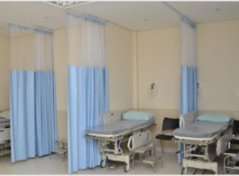
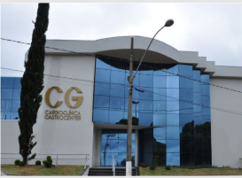

A Cardioclínica
QUEM SOMOS
Localizada em Araxá, Minas Gerais, a Cardioclínica Gastrocenter é
referência em saúde e bem-estar, oferecendo diagnósticos precisos e
tratamentos especializados em mais de 15 áreas médicas.
Nossa equipe altamente qualificada está pronta para atender você com
exames de alta tecnologia nas áreas de cardiologia, gastroenterologia,
dermatologia, oftalmologia e muito mais.
Com horários flexíveis e diversos convênios, garantimos um atendimento
de excelência para cuidar da sua saúde.

PROPÓSITO
Inspirar pessoas a cuidar de pessoas.
MISSÃO
Cuidar de cada pessoa com atenção e
carinho, unindo tecnologia avançada e
acolhimento humano para transformar a
saúde e o bem-estar de toda a comunidade
de Araxá.
VISÃO
Ser o lugar onde cada paciente se sente
seguro e valorizado, inspirando confiança por
meio de um atendimento inovador, caloroso e
sempre focado na qualidade de vida.
VALORES
Nossos valores são a empatia que nos
aproxima, o compromisso com a excelência, a
inovação que aperfeiçoa nossos cuidados, a
ética que guia nossas ações e o carinho que
inspira cada gesto.
Nossa história
Uma história de compromisso, trabalho e dedicação.
A Cardioclínica Gastrocenter oferece aos seus clientes os mais modernos equipamentos e mais avançada tecnologia para a área médica, o que possibilita
realizar maior diversidade de exames, com maior precisão nos resultados. Nossos profissionais são extremamente capacitados e comprometidos com a
excelência no atendimento das expectativas de nossos clientes.
Recursos avançados de informática empregados na área de saúde permitem que os processos internos da clínica sejam totalmente integrados, desde o
início do atendimento à liberação e ao armazenamento dos resultados.
Realizamos todos os exames em um ambiente exclusivo, construído especialmente para atender de forma satisfatória a todos nossos clientes.
Respaldados por uma equipe médica composta de profissionais altamente qualificados.
Disponibilizamos ainda um posto de coleta para exames laboratoriais, em parceria com o Laboratório Carlos Chagas, a fim de agilizar e otimizar o
atendimento.
1999 - Nasce uma referência en saúde cardiovascular e digestiva
Em 1999, a Cardioclinica Gastrocenter inicia
suas atividades em Araxá-MG com foco nas
especialidades de cardiologia e
gastroenterologia. Desde o início a missão
foi oferecer excelencia técnica aliada ao
cuidado humanizado.
1999 - Um time completo para cuidar de você
Já em seu primeiro ano, a clínica contava
com uma equie integrada de especialistas
e investia na formação contínua de seus
profissionais, reforçando seu compromisso
com a qualidade do atendimento.
1999 - Exames de ponta para diagnóstico preciso
Com aparelhos modernos para a época, a
Cardioniclica oferecia exames como
eletrocardiograma, endoscopia digestiva e
ecocardiograma, tornando-se referência em
diagnóstico na cidade.



